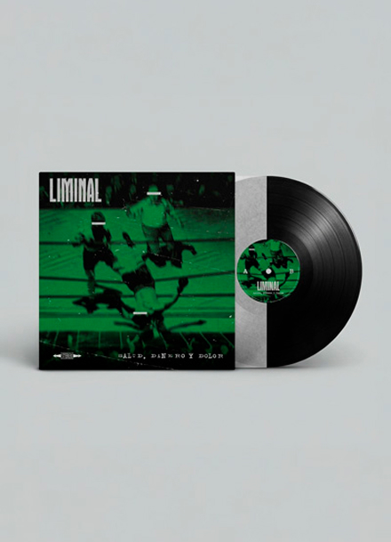
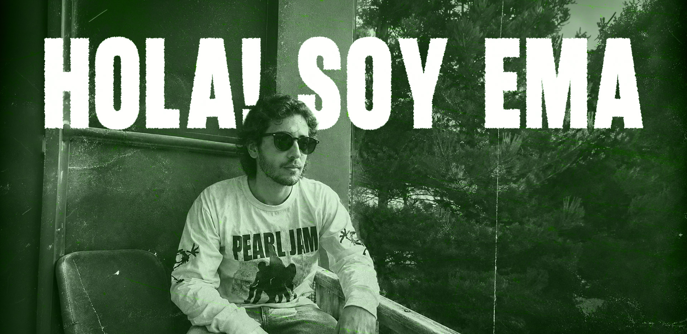

Me llamo Emanuel Roman, soy diseñador gráfico, profe de Inglés y Licenciado en Gestión Educativa. Pero por sobre todo: melómano, nostálgico e hincha de Banfield.
/Selección de trabajos
ARCHIVO VISUAL.
Disfruto abordar proyectos que se conecten con el universo del cine, la música y la cultura alternativa. En cada propuesta busco que los elementos tengan carácter, una estética sólida y una personalidad bien definida para que tu proyecto destaque.
¿HACEMOS ALGO DISTINTO?
Si tenés una idea, una marca que necesita encontrar su identidad
o un proyecto que pide una mirada alternativa, escribime!